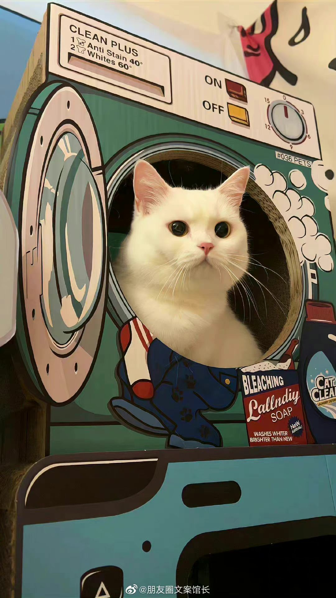

El gato cara de humano.
El terririfico gato cara de humano.
En internet se ha vueto viral el gato que empezó por videos en tiktok a ser un sticker de whatsapp...
Gatito causa ternura.
gato se acomoda en una secadora.
Gato es la sensación de internet por dormir en la secadora, el dueño le saca una foto...
Título del post
Descripción de la imagen.
Texto del artículo que hay acá y texto de prueba. Hola gente del inframundo!
Titulo de la seccion
Texto del artículo que hay acá y texto de prueba. Hola gente del inframundo!
Titulo de la seccion
Texto del artículo que hay acá y texto de prueba. Hola gente del inframundo!